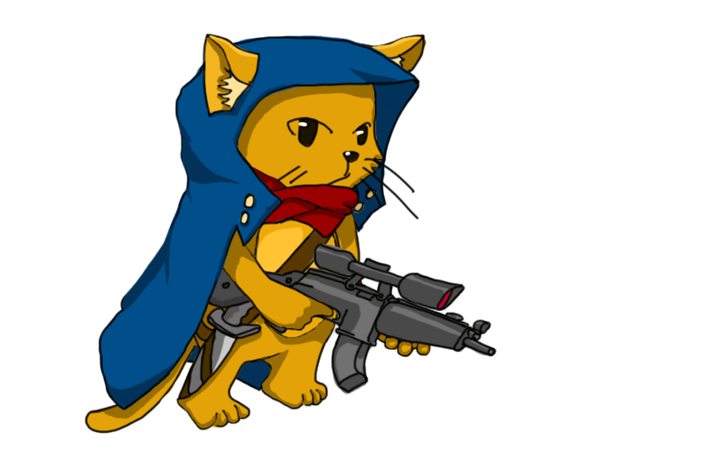
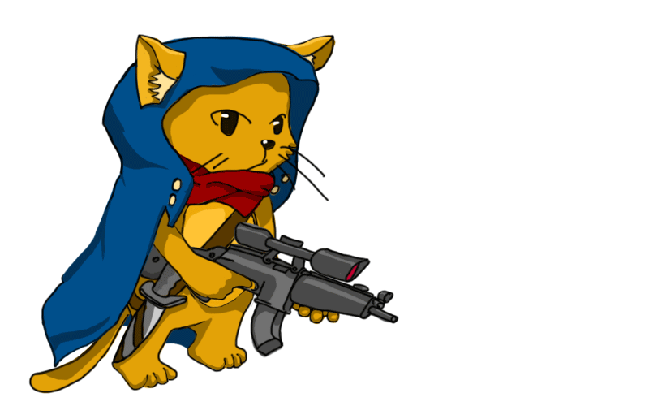

[
BACK
]
Unins Design PAGE (Temporary)
Desert Cat Warrior
 [ fig.01 SD-idle.gif ]
[ fig.02 SD-run.gif ]
FIND MORE! https://Unins.github.io
:
refer
HERE
 [ fig.03 SD-Shortrange-Attack.gif ]
[ fig.04 SD-Longrange-Attack.gif ]
FIND MORE! https://Unins.github.io
:
refer
HERE
Please enable JavaScript to view the
comments powered by Disqus.
 [ fig.02 SD-run.gif ]
[ fig.02 SD-run.gif ]
[ fig.02 SD-run.gif ]
[ fig.02 SD-run.gif ]